Photo album
Home
≫
Skirt
250
5 photos
15 Nov 2025 - 15 Nov 2025
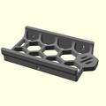
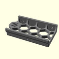
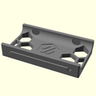
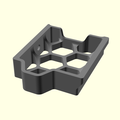
300
5 photos
15 Nov 2025 - 15 Nov 2025
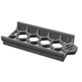
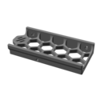
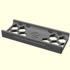
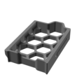
350
5 photos
15 Nov 2025 - 15 Nov 2025
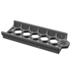
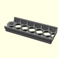
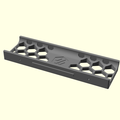
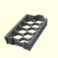
[a]_ btt_ knob_ light_ shield
[a]_ corner_ baseplate_ a_ x2
[a]_ corner_ baseplate_ b_ x2
[a]_ fan_ grill_ a_ x2
[a]_ fan_ grill_ b_ x2
[a]_ fan_ grill_ open_ optional_ x2
[a]_ fan_ grill_ retainer_ x2
[a]_ keystone_ blank_ insert_ x2
[a]_ mini12864_ case_ front_ insert
[a]_ mini12864_ case_ hinge
[a]_ skirt_ logo_ x2
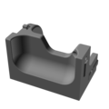
corner_ a_ x2
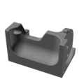
corner_ b_ x2
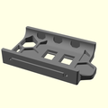
keystone_ panel
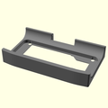
mini12864_ case_ front
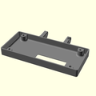
mini12864_ case_ rear
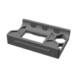
power_ inlet_ adamstech
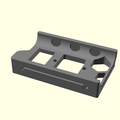
power_ inlet_ filtered
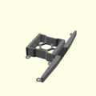
side_ fan_ support_ x2
![[a]_btt_knob_light_shield.png](media/large/Skirt/%5Ba%5D_btt_knob_light_shield.png)
![[a]_corner_baseplate_a_x2.png](media/large/Skirt/%5Ba%5D_corner_baseplate_a_x2.png)
![[a]_corner_baseplate_b_x2.png](media/large/Skirt/%5Ba%5D_corner_baseplate_b_x2.png)
![[a]_fan_grill_a_x2.png](media/large/Skirt/%5Ba%5D_fan_grill_a_x2.png)
![[a]_fan_grill_b_x2.png](media/large/Skirt/%5Ba%5D_fan_grill_b_x2.png)
![[a]_fan_grill_open_optional_x2.png](media/large/Skirt/%5Ba%5D_fan_grill_open_optional_x2.png)
![[a]_fan_grill_retainer_x2.png](media/large/Skirt/%5Ba%5D_fan_grill_retainer_x2.png)
![[a]_keystone_blank_insert_x2.png](media/large/Skirt/%5Ba%5D_keystone_blank_insert_x2.png)
![[a]_mini12864_case_front_insert.png](media/large/Skirt/%5Ba%5D_mini12864_case_front_insert.png)
![[a]_mini12864_case_hinge.png](media/large/Skirt/%5Ba%5D_mini12864_case_hinge.png)
{kind=link}
{kind=link}
{kind=link}
{kind=link}
{kind=link}
{kind=link}
{kind=link}
{kind=link}